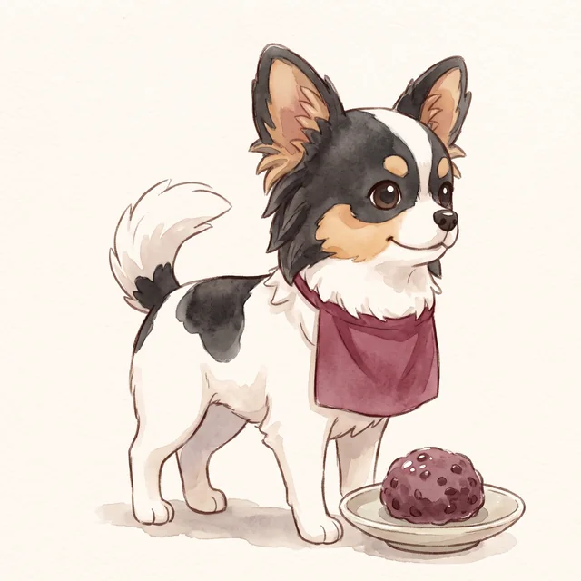

Home › About Ohagi and the studio
About Ohagi and the studio

Ohagi
The studio's model dog, a papillon-chihuahua mix: black head with a white stripe, big feathered ears and a curly white tail.
Our YouTube channel ("Bonless Hamster ch") and TikTok, with Ohagi's everyday life alongside Bonless the plush hamster, will be back soon.
Ohagi Kinako Kobo
A one-person studio making games about dogs. Our first game, Chiwa-Chiku RUN, came out in autumn 2026.
We make games for people who live with dogs and love dogs, and for families playing together. So no dog is ever hurt, no ads appear during play, and no personal information is collected.
How the games are made, and AI
The games are built with Unity.
The dogs' 3D models were made with Meshy, some artwork with Google Gemini, and the code and in-game text with an AI coding assistant (Claude Code). The developer chose, adjusted and checked all of it. No AI content is generated while you play. Music and sound effects are human-made assets.
The sweet-shop illustration and the dogs in aprons on this site were also made with Google Gemini and chosen by the developer.
Videos and streaming
You're welcome to stream or make videos of our games without asking first, including monetised ones. Please put the game's name and a link to its page in the description.
Please don't extract the music, sound effects or artwork for use in other works.
Contact
For press and business enquiries: ohagikinakokobo@gmail.com
You can also send bug reports and feedback from the contact form inside each game.